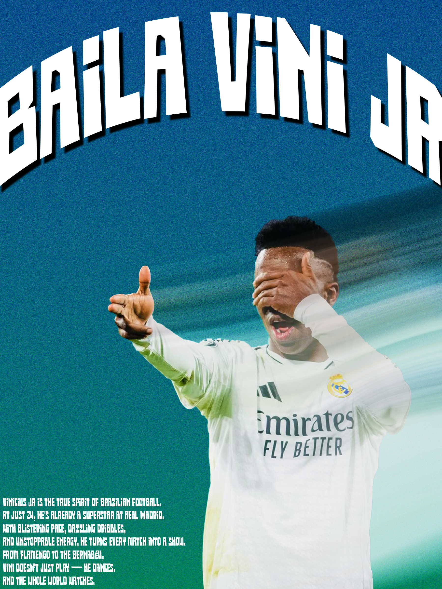

Poster football - Vini Jr
J’ai créé cette affiche sur Photoshop en m’inspirant du documentaire sur le joueur de football Vinícius Jr. J’ai tout d’abord réfléchi au style que je voulais donner à l’affiche avant de me lancer dans la création. Après avoir fait quelques recherches et testé des couleurs, j’ai décidé de partir sur un fond rappelant les couleurs du Brésil, avec du jaune et du vert. J’ai ensuite détouré une image de Vini Jr en action afin de la mettre en avant au centre de l’affiche. J’ai ajouté des effets de lumière et des textures pour donner du dynamisme à l’ensemble.
Pour le texte, j’ai simplement choisi une typographie un peu originale avant d’y ajouter quelques effets, et j’ai fait la même chose pour le texte situé en bas à gauche de Vini Jr.
